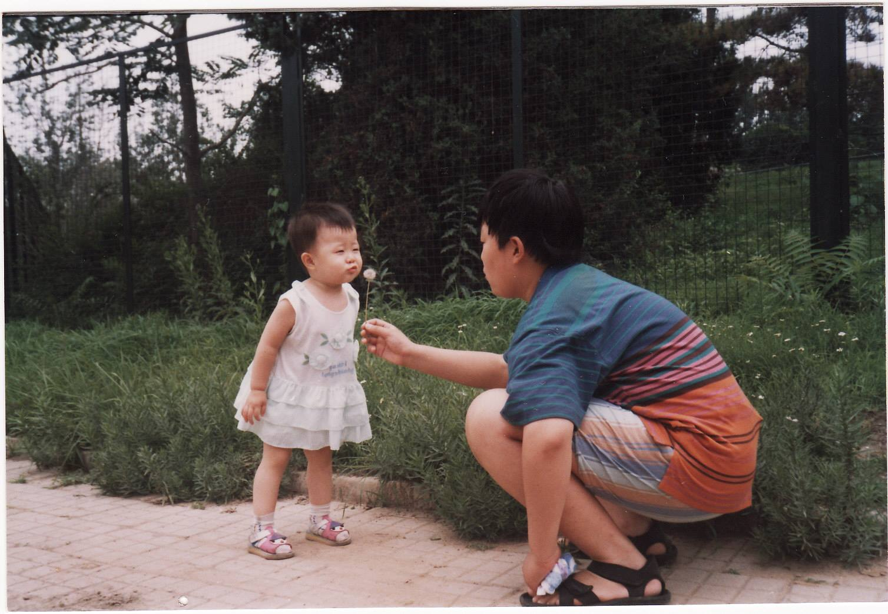

WELCOME TO THE PERSONAL WEBSITE OF:
Ava Wei
Click the arrows to find out more.
WELCOME TO THE PERSONAL WEBSITE OF:
Click the arrows to find out more.
I am in my final semester of the Honours Business Administration program. I've learned a lot throughout my four years at Wilfrid Laurier University from my courses and extracurricular activities. I've also had extensive experience with teamwork while completing numerous group projects. One of the most significant accomplishments from these projects would be qualifying as semi-finalists for the Integrated Case Exercise competition.
My most recent work experience was at Maxxam Analytics. I worked there as an Accounts Payable Intern for 8 months. Through the job, I developed experience with using Sage 300 ERP (AccPac), improved my organizational skills, and put my detail-oriented abilities to good use. I also developed the ability to multi-task and work more efficiently.
I have held several executive positions while being involved in extracurricular activities. I am currently the Vice President of Finance of the club Kids Help Phone Laurier. I have successfully hosted events along with the rest of the executive team. I am mainly responsible for budget planning, processing expense forms, and other financial duties.
Aside from focusing on academics and extracurricular activities, I am a competitive badminton player and have played the sport starting from a young age. I have been captain of my team in elementary school and won the M.V.P. award numerous times in middle and high school. I have won gold at the regional championships twice and qualified for city championships every year. I have also qualified for the OFSAA championships, and won the gold medal of C flight there.
Thanks for visiting my website! Before you leave, enjoy this funny baby photo of me.
I always strive to achieve the goals that I set for myself. This has started when I was a little girl. Look at how hard I'm trying to blow off the seeds of the dandelion. I was very determined. I realize that in this photo, all the seeds are still attached despite my heavily exerted efforts, but I assure you, I achieved my goal shortly afterwards with perseverance. As with everything else in life, I work hard and never give up. I continuously work towards improvement and I'm always willing to learn new things. You are most likely on my website because I've applied for a job upon graduation. If you would like to contact me for an opportunity, please click below. I promise that I won't disappoint you.
